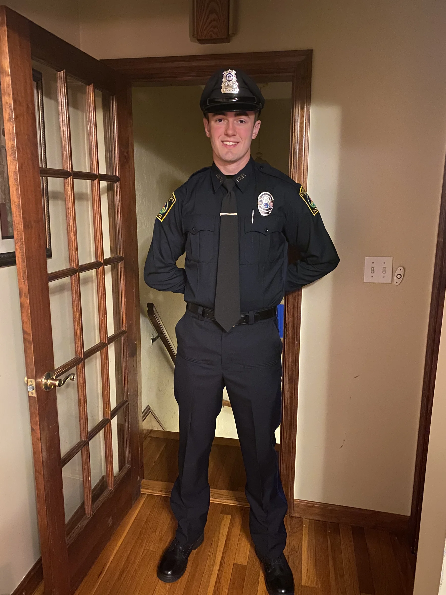
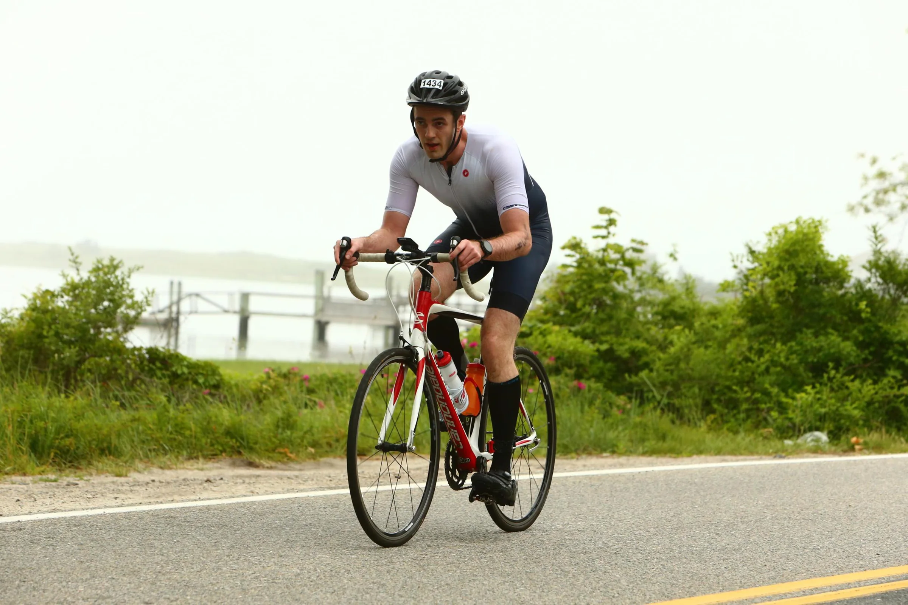
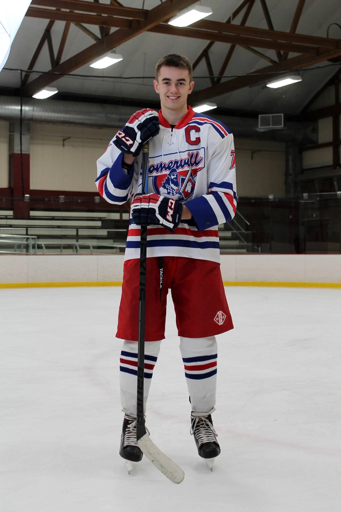

Education is something I take very seriously, and I have been fortunate enough to receive multiple degrees, including a bachelor's degree in criminal justice from UMass Boston; a bachelor's degree in information technology, with a concentration in data analysis and minors in applied math and project management, from Southern New Hampshire University; and, most recently, a master's degree in criminal justice from American International College. Most of these degrees were obtained while working full-time, and I eagerly look forward to any opportunities to continue my education now that I have finished my most recent college degree.
About Me
Richard Lavey
My name is Richie, and I started my career in law enforcement to become an active member of the community that gave so much to me while I was growing up. I entered the academy during the summer of 2020 and have worked in law enforcement ever since, but I also love data analysis and statistics, which I am sure you will notice as you look around my website.
Experience and Interests
Background

Throughout my policing career, I have developed strong communication skills and proficiency in report writing. Additionally, I have honed my technical skills, becoming very familiar with Python and acquiring knowledge in Swift, SQL, and HTML, among other programming languages, as well as in the use of large language models to expedite my progression toward my goals. My passion for data analysis is reflected in several projects showcased on this website, including a Connect Four AI made completely with a neural network, a Big Brother fantasy draft, some statistical analyses of different sports leagues, and a few iPhone apps.
Statistics, in particular, have always interested me. I love focusing on optimization problems where I can find out not only the best way to accomplish a goal but also why this way is optimal. This is as true in my statistical projects as it is in my day-to-day life as a police officer.


I love acquiring new hobbies and learning about all the intricacies of each, so much so that I often joke my only true hobby is exploring new hobbies. Some of my many interests include learning new languages, hockey, jiu-jitsu, frisbee, rock climbing, triathlon training, coding, chess, and many other tabletop games. Many of these hobbies involve copious amounts of continuous learning, and I like to rotate through them because I can apply philosophies learned in one to the others.